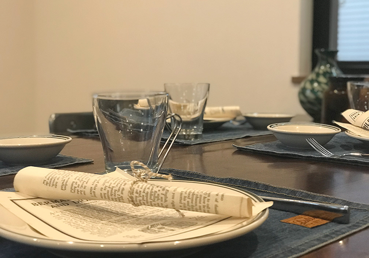
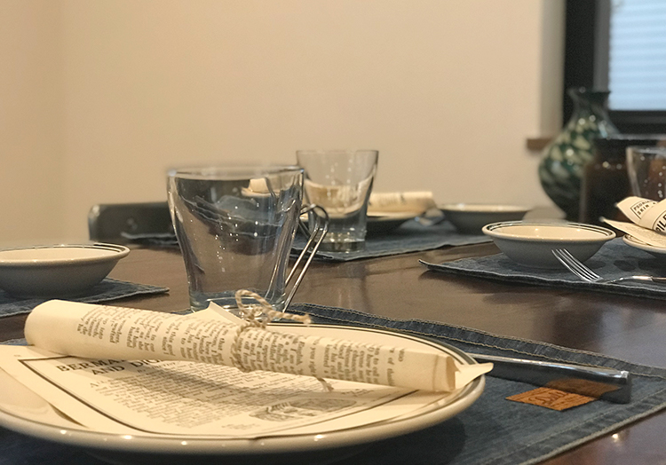

cssアニメーションで作る画像スライド

 

マウスオーバーで画像をズーム
マウスオーバーで詳細
森戸神社
森戸神社とは、850年ほど前に、平治の乱に敗れ伊豆に流された源頼朝公が、三嶋明神(三嶋大社)を深く信仰し、源氏の最高を祈願したお寺とされています。本殿のわきを通って海側に出るとモリト海岸の美しい景色が目の前に広がります。
葉山公園
葉山公園は海に面した公園です。潮風が吹き通る松林と、目の前に広がる相模湾が、昔と変わらず海岸風景を作り出しています。葉山御用邸に隣接するこの公園は、かつては御用邸付属の馬場でした。
葉山しおさい公園
葉山御用邸付属邸跡地に開設された公園。三ケ岡山を借景とした日本庭園には、流れ落ちる「噴井(ふけい)」の滝があります。 茶室一景庵や潮亭などの施設があり、海岸側にある黒松林からは、富士山や伊豆半島、大島などが一望できます。